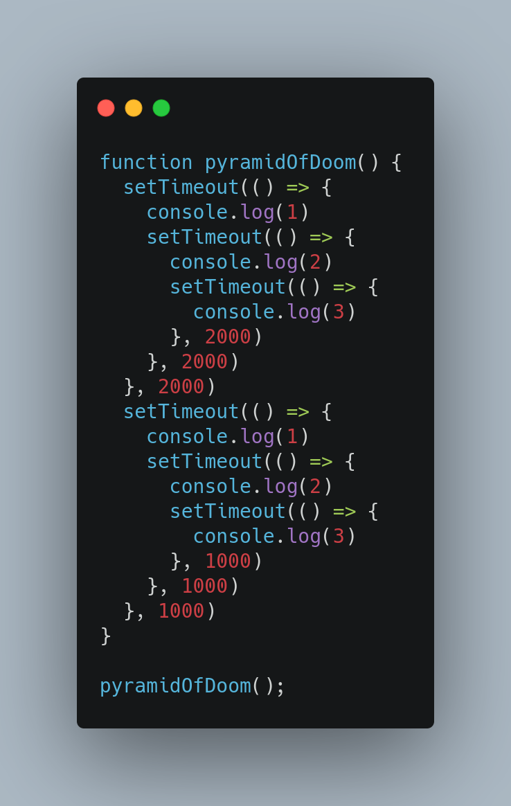

First of all, when pyramidofDoom function will be called, a execution
context will be created for that. Thereafter, everything inside it will be
put into call stack one by one and will be executed.
STEP 1:
The function residing inside the setTimeOut function in line 2 inside the
pyramidofDoom will be shifted to web api container, from there after 2
seconds it will be transferred to callback queue.
STEP 2:
The 2nd function in line 11 will be shifted to web api container and from
there it will be shifted to CALLBACK QUEUE after 1 second.
STEP 3:
Now the function in line 11 will be pulled out from callback queue and
will be executed and it will print 1. and function in line 13 will
be shifted to web api container. After that function in line 2 will be
putlled out from callback queue and will be exceuted and it will
print 1 and function in line 4 will be transfered to web api
container and now it will execute after 2 seconds.
STEP 4:
Function in line 13 will be pulled out from call back queue and will be
executed and will print 2. After that function in line 15 will be
put into web api container and from there it will be transferred to
callback queue and since it's time of execution is after 1 seconds, so
line 15 function will be transferred to callback queue before line 4
function and it will print 3.
STEP 5:
After taht line 4 function will get executed and it will print 2.
and function in line 6 will be transferred to web api container and from
there to callback queue, and then it will get exceuted and will
print 3.